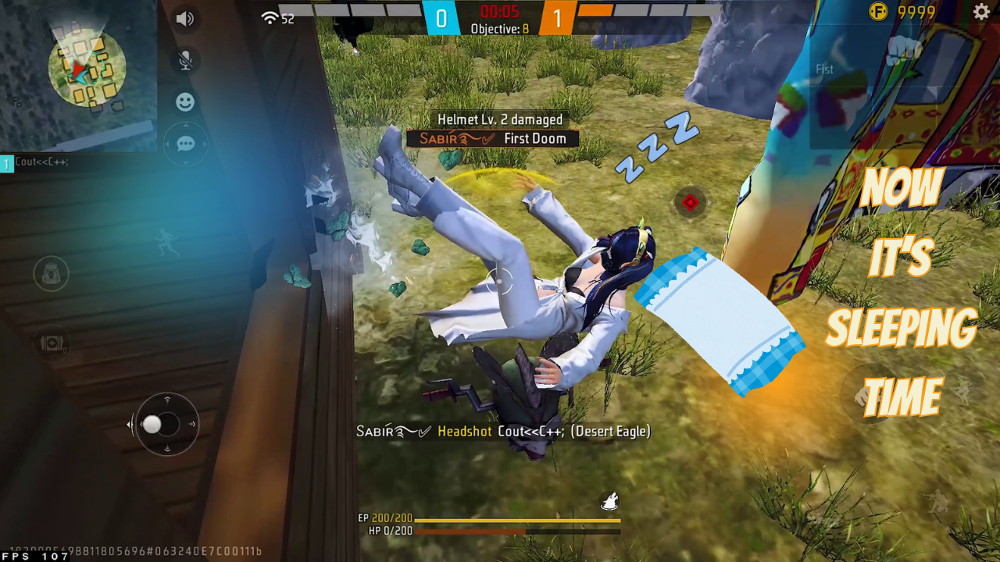
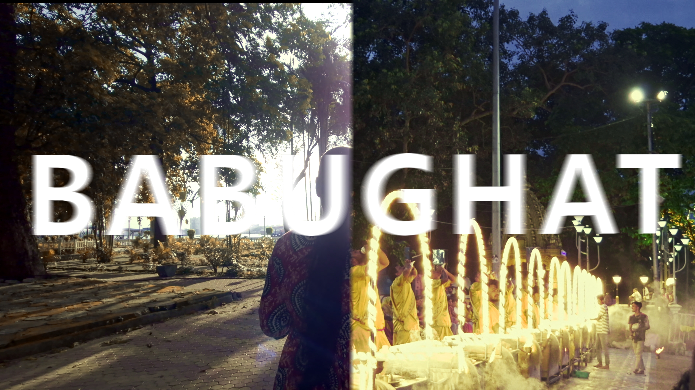
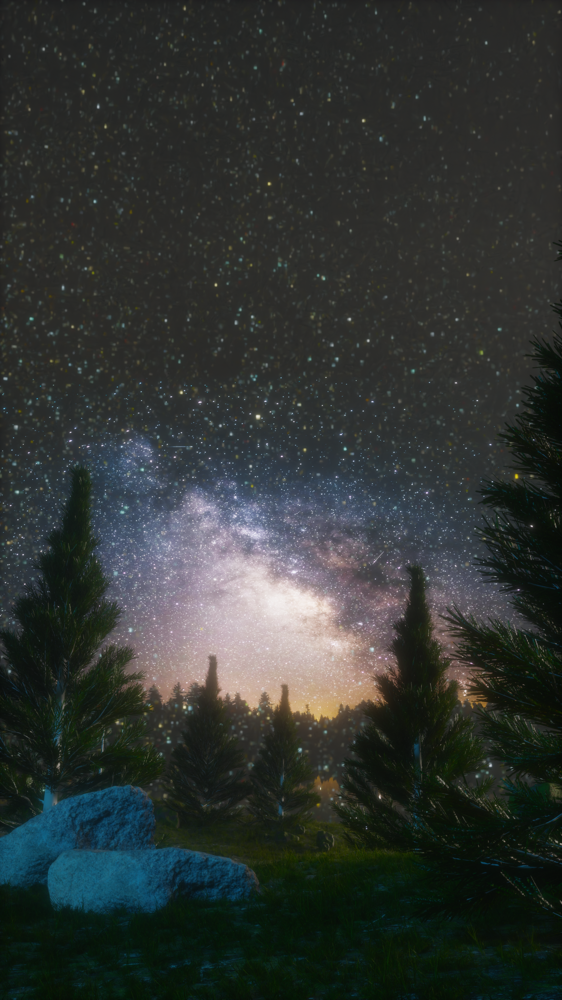

VIDEO EDITINGGaming Montage
Beat sync, impactful cuts & transitions
Visual storyteller / India
Turning raw footage into feel-something visuals. I edit videos with rhythm, atmosphere and a little cinematic obsession — from gaming montages to stories that stay with you.
A few things I’ve cut
A small collection of edits, moods and experiments. Each frame has a purpose; every cut should earn its place.

VIDEO EDITINGBeat sync, impactful cuts & transitions

CINEMATICColor grading, atmosphere & pacing

MOTION / 3D3D visuals, animation & transitions
Instagram/Youtube shorts editing, sound design & caption
🎬 Need high-quality video ads or cinematic edits for your brand?
I create eye-catching promotional ads, engaging reels, and professional video edits that grab attention and make your brand stand out.
📩 Mail me to bring your next project to life!
Have a story to tell?
Need an editor who cares about the details as much as the final frame? Tell me what you’re building. Let’s make it feel different.
arup.kumar.das@outlook.com